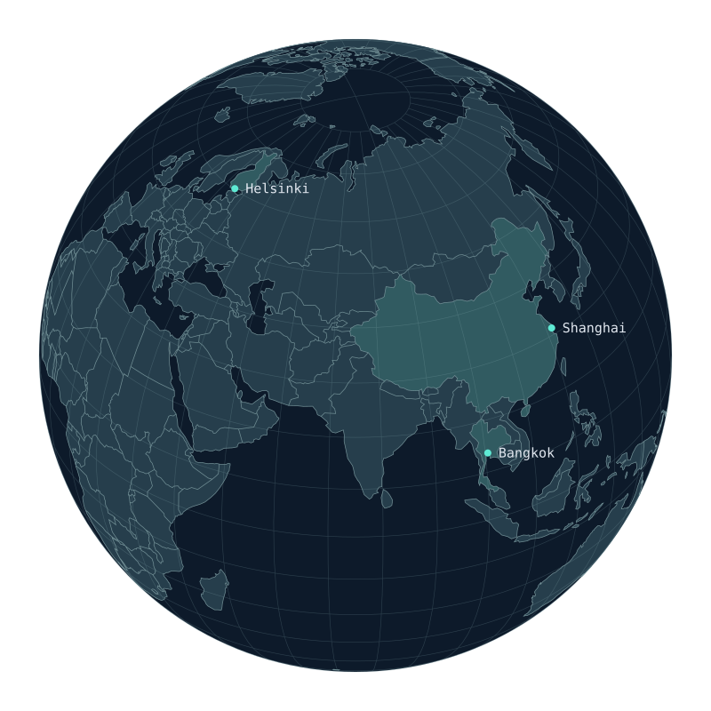

Hakemisto / Tutustu tarkemmin
Ajattele. Rakenna. Julkaise.
Ajatuksesta käytäntöön
Ihmisen ajatus.
Toimivaksi ohjelmistoksi.
Paikat / Oma kartastoni

Interaktiivinen maapallo: Shanghai, Bangkok ja Helsinki. Kierrä nuolinäppäimillä.Asun Helsingissä.
Rakennan tekoälyä ja ohjelmistoja.
Interaktiivinen kartta ei ole käytettävissä. Voit silti tutustua kaupunkikortteihin.
Hakemisto / Tutustu tarkemmin
Ajattele. Rakenna. Julkaise.